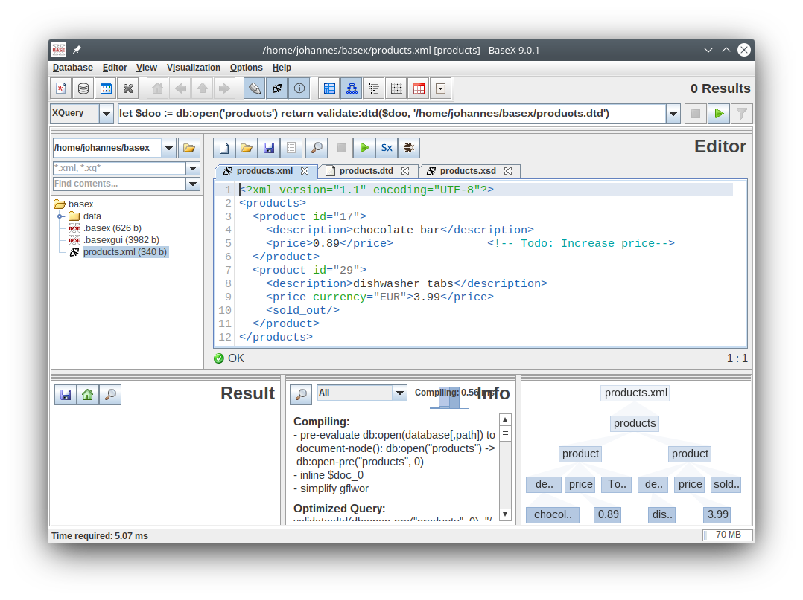

Prof. Dr.-Ing. Johannes Schildgen
johannes.schildgen@oth-regensburg.de
Modern Database Concepts
Chapter 2: Data Formats


Classifications of Data
Structured Data
| product_id | description | price |
|---|---|---|
| 17 | chocolate bar | 0.89 |
| 29 | dishwasher tabs | 3.99 |
Semi-Structured Data
{ "product_id": 17,
"description" : "chocolate bar",
"price": 0.89 }Unstructured Data
"A chocolate bar costs 0.89 Euro. This product has the product ID 17."
Data Formats for
Semi-Structured Data
- CSV - Comma-separated Values
17,chocolate bar,0.89 - XML - Extensible Markup Language
chocolate bar 0.89 - JSON - JavaScript Object Notation
- BSON - Binary JSON
- YAML - YAML Ain’t Markup Language
- RDF - Resource Description Framework
<http://product/17> <http://product#costs> "0.89"
CSV
Comma-Separated Values
product_id,description,price
17,chocolate bar,0.89
29,"dishwasher tabs, 100 pack",3.99
88,"cat food ""Catcat"""Properties:
- Column Separator, e.g,
, - Column Delimiter, e.g.
" - With or without header row (column names)
- Encoding, e.g. UTF-8
XML
Extensible Markup Language
Data Model: Tree
Node Types: <Element>, Attribute="", Text,<?Processing Instruction>, <!-- Comment -->
XML Elements and Attributes
<Elements>
- start with an opening tag, end with a closing tag
<price>0.89</price>
abbreviation for empty elements:<sold_out/>
- have a set of attributes
<price currency="EUR">0.89</price>
- have contents (children):
- text:
0.89 - elements (sequence of nested elements)
- mixed content (text and elements)
- text:
Well-formed, valid, DTD
When a document follows all rules of XML (e.g., each opening tag has to be closed), it is well-formed.
When a document matches a given schema (e.g., a DTD or an XML Schema (XSD)), it is valid.
DTD (Document Type Definition)
XML Schema (XSD)
BaseX (XML DBMS)
XPath
Query language to traverse an XML document tree step by step.
Data Model: List of Nodes (Elements, Attributes, Texts, ...)
- Path Expression:
/step/step/step/... - step:
axis::node-test[predicate] - axis:
child(default),descendant-or-self(//),parent(..), ... - node-test: name test,
*,text(), .. - predicate, e.g.
[@id="17" or description="cat food"]
//product[price>1]/description/text()≙
/descendant-or-self::product[child::price/child::text()>1]
/child::description/child::text()XQuery
FLWOR Expressions
for $forvar in <Expr>
let $letvar := <Expr>
where <BoolExpr>
order by <Expr> ascending|descending
return <Expr>Descriptions of products that cost more than 1 EUR (or USD,...)
let $doc := db:open('products')
for $p in $doc//product
where $p/price > 1
return $p/description/text()XQuery
{
let $doc := db:open('products')
for $p in $doc//product
let $price := switch($p/price/@currency)
case "EUR" return $p/price*1.19
default return $p/price
where $price > 0.5
order by $p/description
return
{ $p/description/text() }
}
Result:
chocolate bar
dishwasher tabs
JSON
JavaScript Object Notation
Data Types:
stringnumberbooleanarrayobjectnull
{
"product_id": 17,
"description": "chocolate bar",
"price": 0.89,
"categories": ["food", "sweets"],
"manufacturer": {
"company": "Monsterfood",
"country": "USA"
},
"available": true,
"size": null
}
JSONiq
jsoniq version "1.0";
[
let $products :=
[
{ "product_id": 17, "description": "chocolate bar",
"price": 0.89 },
{ "product_id": 29, "description": "dishwasher tabs",
"price": 3.99 }
]
for $p in $products()
where $p.price gt 0.5
order by $p.description
return $p.description
]Try out at http://try.zorba.io/
JSONPath
$[?(@.price>1)].description$ | context element (e.g. root object or array) |
.attr | access attribute in an object |
[n] | access the n-th element in an array |
* | access all attributes in an object or all elements in an array |
..attr | recursively descendant search of an attribute |
?(predicate)) | filter expression |
@ | the current node (used in filter expressions) |
Try out at https://jsonpath.curiousconcept.com/
BSON
Binary JSON
More efficient storage and scan-speed than JSON strings
{ "_id": 17, "description": "chocolate bar" }| length | type | field | value | type | field | length | value | EOD |
| 0 | 16 | _id\0 | 17 | 2 | description\0 | 14 | chocolate bar\0 | \0 |
| 4 Bytes | 1 | 4 | 4 | 1 | 12 | 4 | 14 | 1 |
How much less space does the shown BSON document consume compared to the JSON string?
- 27% less
- same
- 11% more
https://frage.space
YAML
YAML Ain’t Markup Language (human-readable data-serialization language)
3 data types, nesting via indentation
- scalar: numeric (integer, float, Boolean) or string
- list
- dictionary
---
product_id: 17
description: chocolate bar
price: 0.89
categories:
- food
- sweets
manufacturer:
company: Monsterfood
country: USA
available: true,
size: nullSummary
- Structured Data, semi-structured data, unstructured data
- CSV
- XML: DTD, XSD, XPath, XQuery
- JSON: JSONiq, JSONPath, BSON
- YAML